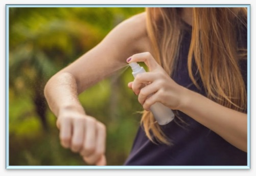
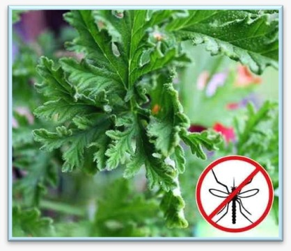
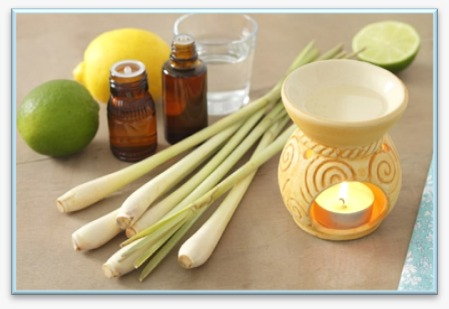
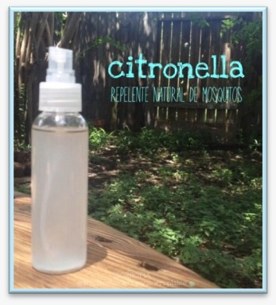

Una propuesta escolar orientada a explorar alternativas de origen vegetal para ayudar a repeler mosquitos y promover prácticas responsables con el ambiente.
Arelys Jimenez Vargas
1ro BGU Foxtrot
Ricardo Villafuerte
21 de septiembre de 2026
Conoce la información principal que fundamenta nuestro proyecto.
Un biorepelente es una preparación que utiliza sustancias de origen vegetal que pueden ayudar a repeler determinados insectos.
Los mosquitos pueden transmitir enfermedades, por lo que es importante conocer diferentes medidas para reducir el contacto con ellos.
Explorar una alternativa de preparación sencilla basada en ingredientes de origen vegetal y promover el cuidado responsable del entorno.
Elementos utilizados para elaborar el biorepelente.
Procedimiento utilizado para preparar el producto.
Colocar las hojas de eucalipto en agua caliente para obtener una preparación concentrada.
Permitir que la preparación se enfríe y repose antes de continuar con el procedimiento.
Colar la preparación para retirar los restos de las hojas.
Añadir el aceite esencial de citronela y mezclar cuidadosamente.
Colocar la preparación en un atomizador, etiquetarlo correctamente y conservarlo de forma adecuada.
Registro fotográfico de las actividades realizadas.

Evidencia 1

Evidencia 2

Evidencia 3

Evidencia 4
El producto elaborado consiste en una preparación basada en ingredientes de origen vegetal, presentada en un envase con atomizador para facilitar su aplicación.
Los productos utilizados para repeler insectos forman parte de la vida cotidiana, especialmente en lugares donde los mosquitos son frecuentes.
Investigar alternativas elaboradas con ingredientes vegetales permite conocer otras posibilidades y, al mismo tiempo, reflexionar sobre la importancia de utilizar los productos de manera responsable.
La preparación de un biorepelente también representa una oportunidad educativa, ya que permite relacionar conocimientos científicos, cuidado personal y responsabilidad ambiental.
Los ingredientes de origen vegetal pueden formar parte de preparaciones destinadas a repeler determinados insectos.
El proyecto permitió aplicar conocimientos de investigación y seguir un procedimiento ordenado para elaborar el producto.
También permitió reflexionar sobre la importancia de buscar alternativas y utilizar cualquier producto de manera responsable.
Fuentes utilizadas como referencia para la investigación.
Información relacionada con la prevención y control de enfermedades transmitidas por mosquitos.
Información sobre prevención de enfermedades transmitidas por vectores.
Información educativa sobre mosquitos y medidas para reducir las picaduras.